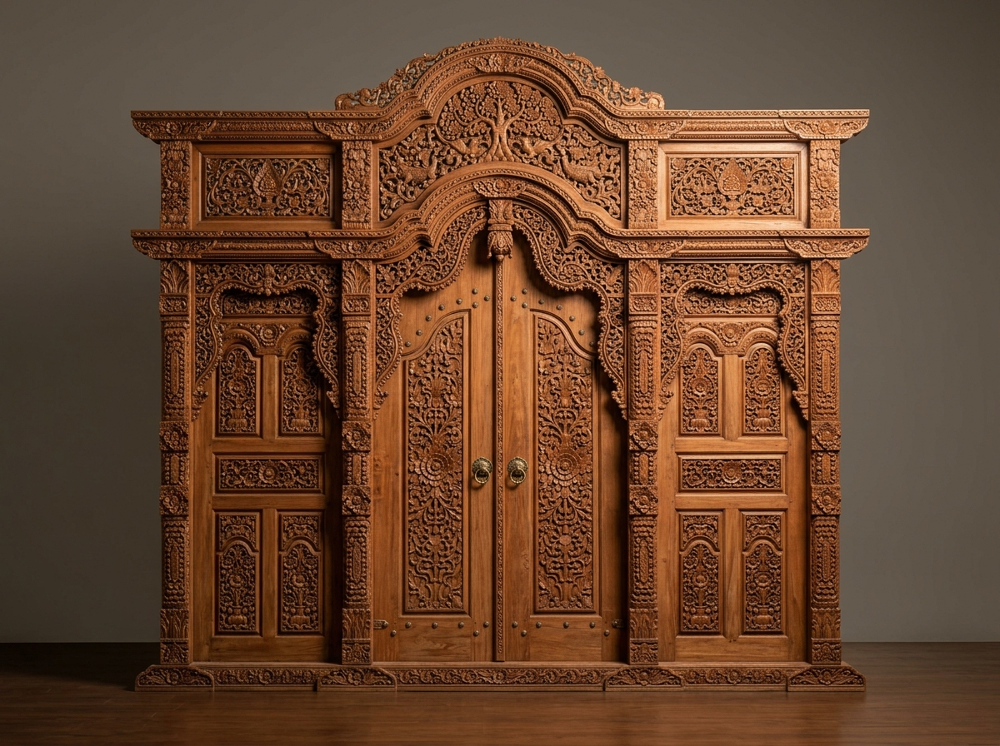

MAHAKARYA 3D
PINTU UTAMA / FAÇADE
Pintu Gebyok Kudusan Mahkota Gunungan 3 Dimensi
Ukir relief tembus khas Kudus dengan ornamen Gunungan Wayang agung. Sangat anggun untuk pintu depan rumah Joglo maupun rumah tropis modern.
Lebar: 300 cm
Tinggi: 275 cm
Tiang: 14x12 cm